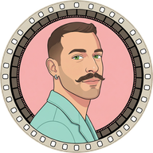

אני יובל מויאל, בוגר קולנוע ותסריטאות. תואר מדהים שבתכלס מאוד קשה להתפרנס ממנו. לפני שלוש שנים כתבתי ספר ילדים, ולא הסכמתי שמישהו אחר יאייר אותו. ככה צללתי ל-AI.
היום אני מביים פרסומות וטריילרים בלי מצלמה, ומלמד אחרים לחשוב כמו במאים כשהם עובדים עם AI.
תכירו את בוב, הכלב-סוכן שלי. הוא נקרא על שם הכלב האמיתי שלי, שהולך איתי לכל מקום. התפקיד שלו: לעשות לי סדר, להגיד לי את האמת גם כשהיא לא נעימה, ולעצור אותי כשאני מתפזר.

מוזמנים להציץ במה שאני עושה.
@yuvi.ai1